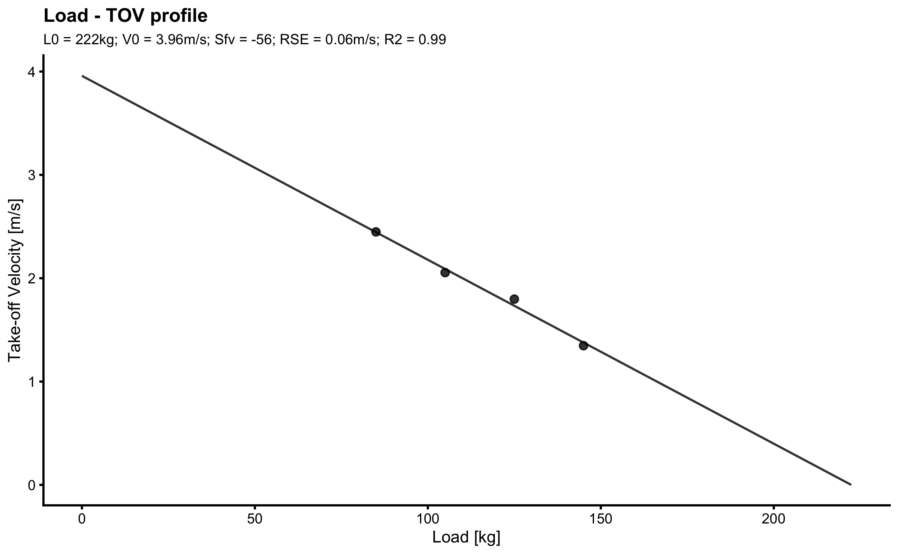

Chapter 19 Appendix C: vjsim package

vjsim (98) is R package that simulates vertical jump with the aim of teaching basic biomechanical principles, FV profiling, and exploring assumptions of FV optimization models.
19.1 vjsim Installation
You can install the development version from GitHub with:
19.2 vjsim Usage
Please read accompanying vignettes for examples and usage of the vjsim package
19.2.1 Introduction to vjsim
This vignette discusses the basic mechanical representation of the vertical jump system. Please read this to understand the overall setup. Access it by clicking the above link or running the following code:
19.2.2 Simulation
This vignette continues the Introduction vignette and expands on the topic of simulation and how vertical jump is simulated. Access it by clicking the above link or running the following code:
19.2.3 Profiling
Once you understand how the Simulation works, we can start playing with profiling. Force-Velocity (FV), Load-Velocity (LV), and other profiles are discussed. Access it by clicking the above link or running the following code:
19.2.4 Optimization
In this vignette I will introduce few optimization models, influenced by the work of Pierre Samozino and Jean-Benoit Morin. Access it by clicking the above link or running the following code:
19.2.5 Exploring
In this vignette we are going to explore various assumptions of the model, “optimal” FV profiles and some other interesting questions. Access it by clicking the above link or running the following code:
19.2.6 Modeling
In this vignette I am going to show you how you can use vjsim to create athlete profiles from collected data
19.2.7 Shiny App
To run the Shiny app, use the following code, or by clicking on the above link (this will take you to the shinyapps.io)
19.3 vjsim Example
vjsim comes with an example data (testing_data) that can be used to demonstrate the profiling:
require(vjsim)
require(tidyverse)
data("testing_data")
testing_data
#> athlete bodyweight push_off_distance external_load aerial_time
#> 1 John 100 0.45 0 0.5393402
#> 2 John 100 0.45 20 0.4692551
#> 3 John 100 0.45 40 0.4383948
#> 4 John 100 0.45 60 0.3869457
#> 5 John 100 0.45 80 0.3383155
#> 6 Jack 85 0.35 0 0.4991416
#> 7 Jack 85 0.35 20 0.4188160
#> 8 Jack 85 0.35 40 0.3664766
#> 9 Jack 85 0.35 60 0.2746293
#> 10 Peter 95 0.50 0 0.6908913
#> 11 Peter 95 0.50 20 0.5973635
#> 12 Peter 95 0.50 40 0.5546890
#> 13 Peter 95 0.50 60 0.4896103
#> 14 Peter 95 0.50 100 0.4131987
#> 15 Jane 55 0.30 0 0.4589603
#> 16 Jane 55 0.30 10 0.4310090
#> 17 Jane 55 0.30 20 0.3717250
#> 18 Jane 55 0.30 30 0.3354157
#> 19 Jane 55 0.30 40 0.3197858
#> 20 Chris 75 NA 0 0.4943675
#> 21 Chris 75 NA 20 0.4618711
#> 22 Chris 75 NA 40 0.4318388
#> 23 Chris 75 NA 60 0.4013240
#> 24 Chris 75 NA 80 0.3696963As can be seen from the above listing, testing_data contains data for N=5 athletes. Each athlete performed progressive squat jumps (external load is indicated in external_load column; weight are in kg) and the flight time (aerial_time) in seconds is measured using the jump mat. Some measuring devices will return peak velocity (PV), take-off velocity (TOV), or calculated jump height (height) which is the most common.
We will select Jack and show his Load-Velocity (LV) profile using vsim function vjsim::make_load_profile38:
# Filter only Jack's data
jack_data <- filter(testing_data, athlete == "Jack")
# Make a LV profile
# Here we have used `with` command to simplify the code
# If not we need to use:
#
# vjsim::make_load_profile(
# bodyweight = jack_data$bodyweight,
# external_load = jack_data$external_load,
# aerial_time = jack_data$aerial_time,
# plot = TRUE
# )
jack_LV_profile <- with(jack_data,
vjsim::make_load_profile(
bodyweight = bodyweight,
external_load = external_load,
aerial_time = aerial_time,
plot = TRUE
)
)
Velocity, in this case TOV, is calculated by first calculating jump height from the aerial_time using vjsim::get_height_from_aerial_time function inside the vjsim::make_load_profile, which is later converted to TOV using ballistic equations.
This LV profile has the following parameters:
jack_LV_profile
#> $L0
#> [1] 222.3918
#>
#> $L0_rel
#> [1] 2.616374
#>
#> $TOV0
#> [1] 3.959045
#>
#> $Sltv
#> [1] -56.17309
#>
#> $Sltv_rel
#> [1] -0.6608599
#>
#> $RSE
#> [1] 0.0560288
#>
#> $R_squared
#> [1] 0.9901916To perform optimization Force-Velocity (FV) profile using Samozino et al. approach (93,94,167–172) use vjsim::make_samozino_profile:
jack_FV_profile <- with(jack_data,
vjsim::make_samozino_profile(
bodyweight = bodyweight,
push_off_distance = push_off_distance,
external_load = external_load,
aerial_time = aerial_time,
plot = TRUE
)
)
Here are the parameters estimated:
jack_FV_profile
#> $F0
#> [1] 2235.995
#>
#> $F0_rel
#> [1] 26.30583
#>
#> $V0
#> [1] 4.037337
#>
#> $Pmax
#> [1] 2256.867
#>
#> $Pmax_rel
#> [1] 26.55137
#>
#> $Sfv
#> [1] -553.8293
#>
#> $Sfv_rel
#> [1] -6.515638
#>
#> $take_off_velocity
#> [1] 2.444065
#>
#> $height
#> [1] 0.3044574
#>
#> $optimal_F0
#> [1] 3389.95
#>
#> $optimal_F0_rel
#> [1] 39.88176
#>
#> $optimal_V0
#> [1] 2.663009
#>
#> $optimal_height
#> [1] 0.3614484
#>
#> $optimal_height_diff
#> [1] 0.05699097
#>
#> $optimal_height_ratio
#> [1] 1.187189
#>
#> $optimal_Pmax
#> [1] 2256.867
#>
#> $optimal_Pmax_rel
#> [1] 26.55137
#>
#> $optimal_take_off_velocity
#> [1] 2.663009
#>
#> $optimal_take_off_velocity_diff
#> [1] 0.2189439
#>
#> $optimal_take_off_velocity_ratio
#> [1] 1.089582
#>
#> $optimal_Sfv
#> [1] -1272.977
#>
#> $optimal_Sfv_rel
#> [1] -14.9762
#>
#> $Sfv_perc
#> [1] 43.50661
#>
#> $FV_imbalance
#> [1] 56.49339
#>
#> $probe_IMB
#> [1] 42.45125
#>
#> $RSE
#> [1] 0.1172931
#>
#> $R_squared
#> [1] 0.8280585In the case that you need to make analysis for multiple athletes, rather than doing one-by-one, use the following tidyverse wrapper:
make_samozino_profile_wrapper <- function(data) {
profile <- with(
data,
vjsim::make_samozino_profile(
bodyweight = bodyweight,
push_off_distance = push_off_distance,
external_load = external_load,
aerial_time = aerial_time,
plot = FALSE
)
)
return(data.frame(
F0 = profile$F0,
V0 = profile$V0,
height = profile$height,
optimal_F0 = profile$optimal_F0,
optimal_V0 = profile$optimal_V0,
optimal_height = profile$optimal_height,
Sfv_perc = profile$Sfv_perc
))
}We can now apply this wrapper function to get FV profile for all athletes in the testing_data data set:
athlete_profiles <- testing_data %>%
group_by(athlete) %>%
do(make_samozino_profile_wrapper(.))
athlete_profiles
#> # A tibble: 5 x 8
#> # Groups: athlete [5]
#> athlete F0 V0 height optimal_F0 optimal_V0 optimal_height Sfv_perc
#> <fct> <dbl> <dbl> <dbl> <dbl> <dbl> <dbl> <dbl>
#> 1 John 3373. 2.72 0.351 3495. 2.63 0.352 93.2
#> 2 Jack 2236. 4.04 0.304 3390. 2.66 0.361 43.5
#> 3 Peter 3772. 3.49 0.562 3964. 3.32 0.563 90.5
#> 4 Jane 1961. 2.31 0.259 2011. 2.25 0.259 95.1
#> 5 Chris NA NA NA NA NA NA NAReferences
93. Jiménez-Reyes, P, Samozino, P, Brughelli, M, and Morin, J-B. Effectiveness of an Individualized Training Based on Force-Velocity Profiling during Jumping. Frontiers in Physiology 7, 2017.
94. Jiménez-Reyes, P, Samozino, P, and Morin, J-B. Optimized training for jumping performance using the force-velocity imbalance: Individual adaptation kinetics. PLOS ONE 14: e0216681, 2019.
98. Jovanović, M. vjsim: Vertical jump simulator., 2020.Available from: https://mladenjovanovic.github.io/vjsim/
167. Samozino, P. A Simple Method for Measuring Force, Velocity and Power Capabilities and Mechanical Effectiveness During Sprint Running. In: Biomechanics of Training and Testing. Morin, J-B and Samozino, P, eds.. Cham: Springer International Publishing, 2018. pp. 237–267
172. Samozino, P, Rejc, E, Di Prampero, PE, Belli, A, and Morin, J-B. Optimal ForceVelocity Profile in Ballistic MovementsAltius: Medicine & Science in Sports & Exercise 44: 313–322, 2012.
You can omit typing
vjsim::in the code. I use it here to indicate functions from thevjsimpackage).↩︎